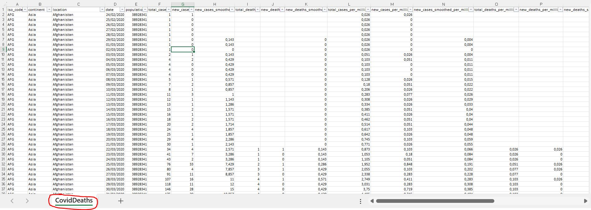
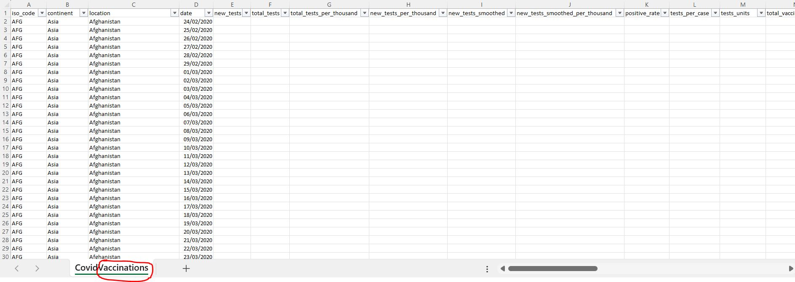
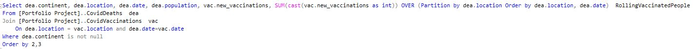
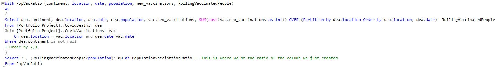
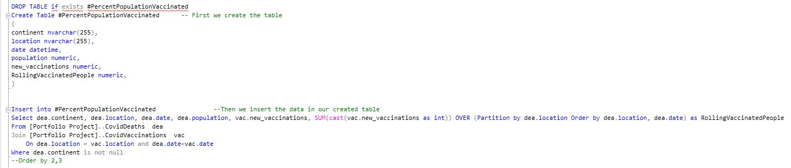

Data exploration in SQL

Introduction
I have used two datasets in .xlsx format mainly giving us the total amount of deaths (that we called CovidDeaths) and the total amount of vaccinations (that we called CovidVaccinations). Here is a snapshot of the datasets:
 An example of what we can get out of these datasets:
We can look at the Total Population vs the total Vaccinations by writing:
However, we would like to look at the ratio Vaccinated people/population. Unfortunately, we cannot use “RollingVaccinatedPeople” since we have just created it. We will therefore use a CTE or temp table, both work.
Here is how we would use a CTE:
And here is how we would use a temp table:
List of examples
Select *
From [Portfolio Project]..CovidDeaths
order by 3,4
--Select *
--From [Portfolio Project]..CovidVaccinations
--order by 3,4
--Select data we will be using
Select Location, date, total_cases, new_cases, total_deaths, population
From [Portfolio Project]..CovidDeaths
order by 1,2
--Total cases vs Total deaths
Select Location, date, total_cases, total_deaths, (total_deaths/total_cases)*100 as DeathPercentage
From [Portfolio Project]..CovidDeaths
Where location like 'France'
order by 1,2
--Total cases vs Population France
Select Location, date, total_cases, population, (total_cases/population)*100 as CasesPercentage
From [Portfolio Project]..CovidDeaths
Where location like 'France'
order by 1,2
--Total cases vs Population US
Select Location, date, total_cases, population, (total_cases/population)*100 as CasesPercentage
From [Portfolio Project]..CovidDeaths
Where location like '%states%'
order by 1,2
--Highest infection rate
Select Location, Population, Max(total_cases) as MaxCases, Max((total_cases/population)*100) as PercentagePopulationInfected
From [Portfolio Project]..CovidDeaths
Group by Location, Population
order by 4 desc
--Highest deaths
Select Location, Max(total_deaths) as MaxDeaths
From [Portfolio Project]..CovidDeaths
Group by Location
order by 2 desc
Select Location, Max(cast(total_deaths as int)) as MaxDeaths -- Use of Cast function because total_deaths was a Varchar, so wrong result
From [Portfolio Project]..CovidDeaths
Group by Location
order by 2 desc
Select Location, Max(cast(total_deaths as int)) as MaxDeaths
From [Portfolio Project]..CovidDeaths
Where continent is not null -- We had the continents before, could have integrated this before. But doesn't really matter
Group by Location
order by 2 desc
--Let's study continents now
Select location, Max(cast(total_deaths as int)) as MaxDeaths
From [Portfolio Project]..CovidDeaths
Where continent is null
Group by location
order by 2 desc
--Accross the entire world
Select date, SUM(new_cases) --Gives the total cases of the world each day by using the sum function
From [Portfolio Project]..CovidDeaths
Where continent is not null
Group by date
Order by 1,2
Select date, new_cases -- Same as above, using the World data
From [Portfolio Project]..CovidDeaths
Where location like 'World'
Order by 1,2
Select date, total_cases -- Gives the total cases of the world
From [Portfolio Project]..CovidDeaths
Where location like 'World'
Order by 1,2
--Numbers of the World everyday
Select date, new_cases, new_deaths, cast(new_deaths as int)/(new_cases)*100 DeathPercentage -- I prefer to use the World data instead of summing on every country
From [Portfolio Project]..CovidDeaths
Where location like 'World' and new_cases>0 --Do not divide by 0
Order by 1,2
--Sum of the Numbers of the World
Select SUM(new_cases), SUM(cast(new_deaths as int)),SUM(cast(new_deaths as int))/SUM((new_cases))*100 DeathPercentage -- I prefer to use the World data instead of summing on every country
From [Portfolio Project]..CovidDeaths
Where location like 'World' and new_cases>0 --Do not divide by 0
--Looking at Total Population vs Vaccinations
Select dea.continent, dea.location, dea.date, dea.population, vac.new_vaccinations, SUM(cast(vac.new_vaccinations as int)) OVER (Partition by dea.location Order by dea.location, dea.date) RollingVaccinatedPeople
From [Portfolio Project]..CovidDeaths dea
Join [Portfolio Project]..CovidVaccinations vac
On dea.location = vac.location and dea.date=vac.date
Where dea.continent is not null
Order by 2,3
--However we want to look at the ratio Vaccinated people/population. We cannot use RollingVaccinatedPeople since we just created it
--We will use a CTE or temp table
With PopVacRatio (continent, location, date, population, new_vaccinations, RollingVaccinatedPeople)
as
(
Select dea.continent, dea.location, dea.date, dea.population, vac.new_vaccinations, SUM(cast(vac.new_vaccinations as int)) OVER (Partition by dea.location Order by dea.location, dea.date) RollingVaccinatedPeople
From [Portfolio Project]..CovidDeaths dea
Join [Portfolio Project]..CovidVaccinations vac
On dea.location = vac.location and dea.date=vac.date
Where dea.continent is not null
--Order by 2,3
)
Select * , (RollingVaccinatedPeople/population)*100 as PopulationVaccinationRatio -- This is where we do the ratio of the column we just created
From PopVacRatio
--Using a Temp table
DROP TABLE if exists #PercentPopulationVaccinated
Create Table #PercentPopulationVaccinated -- First we create the table
(
continent nvarchar(255),
location nvarchar(255),
date datetime,
population numeric,
new_vaccinations numeric,
RollingVaccinatedPeople numeric,
)
Insert into #PercentPopulationVaccinated --Then we insert the data in our created table
Select dea.continent, dea.location, dea.date, dea.population, vac.new_vaccinations, SUM(cast(vac.new_vaccinations as int)) OVER (Partition by dea.location Order by dea.location, dea.date) as RollingVaccinatedPeople
From [Portfolio Project]..CovidDeaths dea
Join [Portfolio Project]..CovidVaccinations vac
On dea.location = vac.location and dea.date=vac.date
Where dea.continent is not null
--Order by 2,3
Select *-- , (RollingVaccinatedPeople/population)*100 as PopulationVaccinationRatio
From #PercentPopulationVaccinated
--Creating a view to store data for visualisation
Create View PercentPopulationVaccinated as
Select dea.continent, dea.location, dea.date, dea.population, vac.new_vaccinations, SUM(cast(vac.new_vaccinations as int)) OVER (Partition by dea.location Order by dea.location, dea.date) RollingVaccinatedPeople
From [Portfolio Project]..CovidDeaths dea
Join [Portfolio Project]..CovidVaccinations vac
On dea.location = vac.location and dea.date=vac.date
Where dea.continent is not null
--Order by 2,3
Select *
From PercentPopulationVaccinated